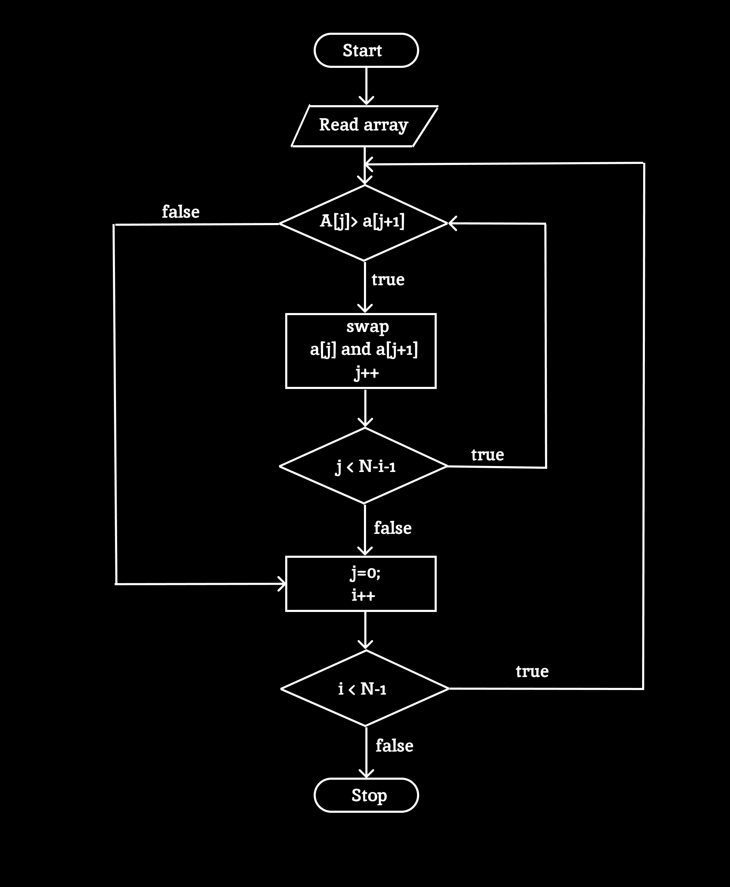

Bubble Sort is a simple sorting algorithm that works by repeatedly stepping through the list to be sorted, comparing adjacent items, and swapping them if they are in the wrong order. The process is repeated until the list is sorted.
HOW IT WORKS ?
Initial Pass:
Start at the beginning of the list.
Compare Adjacent Elements:
Compare the first element with the second element. If the first element is greater than the second, swap them.
Move to the Next Pair:
Move to the next pair of adjacent elements and repeat the comparison and swap if necessary.
Repeat:
Continue this process for each pair of adjacent elements until the end of the list is reached. This completes one pass.
Reduce Scope:
With each pass, the largest unsorted element will "bubble up" to its correct position at the end of the list. Therefore, the next pass can ignore the last element of the list, as it is already sorted.
Check for Completion:
Repeat the process for the remaining unsorted part of the list. Continue doing so until no swaps are needed in a pass, indicating that the list is fully sorted.
Advantages
Simplicity: Bubble sort is very easy to understand and implement. Its straightforward approach of repeatedly comparing and swapping adjacent elements makes it a good educational tool for teaching basic sorting concepts.
Stability: Bubble sort is a stable sorting algorithm. This means that if two elements have equal values, their relative order is preserved in the sorted output. This property can be important when sorting records that have multiple fields.
Adaptive:An optimized version of bubble sort can detect if the list is already sorted. If no swaps are made during a pass through the list, the algorithm can terminate early, potentially reducing the number of comparisons and swaps.
Easy Debugging: Due to its simple logic, bubble sort is relatively easy to debug and understand how it works step-by-step, which can be helpful for learning and troubleshooting.
Good for Small Datasets: For very small lists or datasets where performance is not a critical issue, the simplicity of bubble sort might make it a reasonable choice, especially when the ease of implementation outweighs the need for efficiency.
In-Place Sorting: Bubble sort sorts the list in place, meaning it doesn’t require additional memory proportional to the size of the input list. It only requires a constant amount of extra space for the swaps.
Disadvantages
Inefficiency: Bubble sort has a worst-case and average-case time complexity of
O(n2) where n is the number of elements in the list. This quadratic time complexity makes it inefficient for large datasets compared to more advanced sorting algorithms like quicksort, mergesort, or heapsort, which have better average-case performance.
High Number of Comparisons and Swaps:The algorithm performs many comparisons and potentially many swaps, even when only a few elements are out of place. This can be particularly costly for large lists and can lead to excessive computational overhead.
Not Suitable for Large Data Sets:Due to its quadratic time complexity, bubble sort becomes impractical for sorting large datasets. It can become slow and unmanageable as the size of the dataset grows.
Unnecessary Comparisons: Even if the list is almost sorted, bubble sort will continue to make comparisons and swaps. This can be inefficient if the data is already near the sorted state or if a more efficient algorithm could capitalize on this.
No Built-in Optimizations: The basic implementation of bubble sort doesn’t have built-in optimizations for early termination or other performance improvements, although optimized versions do exist. However, even with such optimizations, its performance often still lags behind more advanced algorithms.
Not Adaptive in Basic Form: In its basic form, bubble sort does not adapt well to the existing order of the data. Although optimized versions can detect already sorted arrays, the basic implementation does not take advantage of partially sorted data.
Applications
Simple Use Cases: For applications where the dataset is very small, bubble sort's inefficiency becomes less of an issue. In such cases, its simplicity can be an advantage. For example, sorting a list of a few dozen elements in a small embedded system or a simple utility program might be done efficiently with bubble sort.
Quick Prototyping: When developing prototypes or proof-of-concept applications, bubble sort can be used to quickly implement sorting functionality without worrying about the complexities of more advanced algorithms.
Not Suitable for Large Data Sets:Due to its quadratic time complexity, bubble sort becomes impractical for sorting large datasets. It can become slow and unmanageable as the size of the dataset grows.
Resource-Constrained Environments: In environments with limited computational resources (e.g., microcontrollers or small embedded systems), bubble sort might be used due to its low memory overhead and simplicity. This is especially true if the dataset being sorted is small.
Algorithm Comparison: Bubble sort can serve as a benchmark for comparing more advanced sorting algorithms. By implementing bubble sort alongside other algorithms, students and researchers can analyze performance differences and understand the improvements made by more complex algorithms.
Maintaining Relative Order: Bubble sort is a stable sorting algorithm, meaning it preserves the relative order of equal elements. This property can be important in scenarios where the stability of the sorting process is required, such as when sorting records that include multiple fields and the order of items with equal keys should be preserved.
Debugging Other Sorts: Bubble sort can be used to verify the correctness of other, more complex sorting algorithms. By comparing the output of a more advanced sorting algorithm against the output of bubble sort, developers can ensure that their sorting implementations are correct.
Benchmarking and Optimization:Researchers might use bubble sort to study algorithm optimization techniques or to benchmark improvements in sorting algorithms. Its predictable performance characteristics make it a useful tool for understanding how optimizations impact sorting efficiency.
Pseudocode
Bubblesort(array A)
n = length(A)
for i from 0 to n-1 do
// Flag to detect if any swap happened
swapped = false
for j from 0 to n-i-2 do
if A[ j ] > A[ j+1 ] then
// Swap elements
swap A[ j ] with A[ j+1 ]
swapped = true
// If no elements were swapped, the array is sorted
if not swapped then
break
Explanation
'n' is the length of the array A.
Runs from 0 to n-1. Each iteration represents a pass through the array. With each pass, the largest unsorted element is moved to its correct position.
Runs from 0 to n-i-2. This loop compares adjacent elements in the array and swaps them if they are in the wrong order. The range decreases with each pass because the largest elements are progressively sorted to the end.
If A[j] is greater than A[j+1], the two elements are swapped. This places the larger element in its correct position for the current pass.
The swapped flag tracks whether any elements were swapped during the inner loop. If no swaps occurred, the array is already sorted, and the algorithm can terminate early to save unnecessary passes.
If no elements were swapped in a pass (i.e., swapped is false), the algorithm breaks out of the outer loop, since the array is sorted.
Flowchart

Example
Let's sort the list [5, 3, 8, 4, 2] using bubble sort:
Initial List: [5, 3, 8, 4, 2]
Pass 1:
Compare 5 and 3 → Swap → [3, 5, 8, 4, 2]
Compare 5 and 8 → No Swap → [3, 5, 8, 4, 2]
Compare 8 and 4 → Swap → [3, 5, 4, 8, 2]
Compare 8 and 2 → Swap → [3, 5, 4, 2, 8]
Pass 2:
Compare 3 and 5 → No Swap → [3, 5, 4, 2, 8]
Compare 5 and 4 → Swap → [3, 4, 5, 2, 8]
Compare 5 and 2 → Swap → [3, 4, 2, 5, 8]
Pass 3:
Compare 3 and 4 → No Swap → [3, 4, 2, 5, 8]
Compare 4 and 2 → Swap → [3, 2, 4, 5, 8]
Pass 4:
Compare 3 and 2 → Swap → [2, 3, 4, 5, 8]
The sorted list is : [2, 3, 4, 5, 8].
Visualization
Bubblesort
Bubblesort(array A)
n=length(A)
for i from 0 to n-1 do
if A[j] > A[j+1]
swap A[j] with A[j+1]
swapped = true
if not swapped then
break
Speed:
1x
2x
Complexity
Visualization Explanation
Time complexity
Definition: Time complexity measures the amount of time an algorithm takes to complete as a function of the size of the input. For bubble sort, the time complexity can be expressed in different scenarios:
Best-Case Time Complexity:O(n)
If the list is already sorted, bubble sort can be optimized to terminate early. The best-case scenario occurs when no swaps are needed. This can be achieved by adding a flag to check if any swaps were made during a pass. If no swaps occur, the algorithm stops early, making the time complexity linear in this case.
Average-Case Time Complexity:O(n2)
On average, bubble sort still performs O(n2) comparisons and swaps. Although the exact number of swaps might be less than in the worst case, the quadratic nature of the algorithm remains.
Worst-Case Time Complexity:O(n2)
In the worst case, bubble sort has to perform a maximum number of comparisons and swaps. This occurs when the list is sorted in reverse order. For each pass through the list, bubble sort compares adjacent elements and potentially swaps them. Since each pass requires n-1 comparisons, and there are up to
n passes, the total number of comparisons is proportional to n2.
Space complexity
Space Complexity
Definition: Space complexity measures the amount of memory an algorithm uses relative to the size of the input. For bubble sort, the space complexity is straightforward:
Space Complexity of bubble sort is :O(1)
Bubble sort is an in-place sorting algorithm. It does not require any additional storage proportional to the input size. It only uses a constant amount of extra space for variables (like a temporary variable for swapping). Thus, the space complexity is
O(1), which indicates that the amount of extra memory used by bubble sort is constant regardless of the size of the input list.